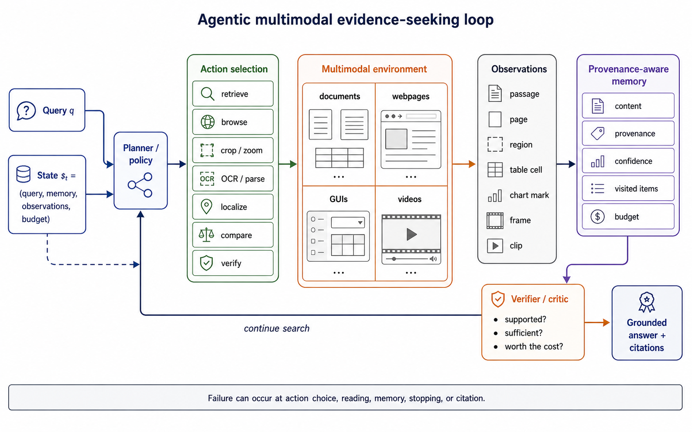
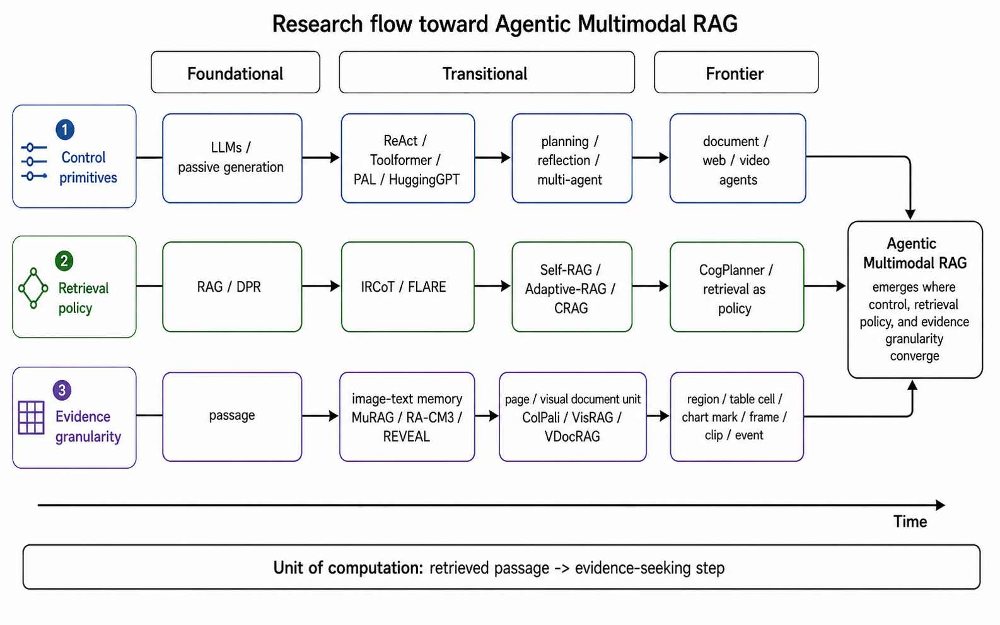
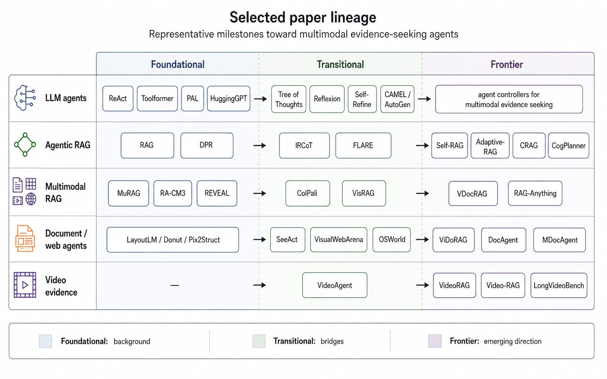

1. Problem setting
Retrieval-Augmented Generation grounds language models in external knowledge, but the standard retrieve-then-read formulation remains mostly text-centric and pipeline-based. The assumption becomes insufficient when the required support is distributed across long documents, layouts, tables, charts, screenshots, webpages, frames, clips, and videos.
This survey uses evidence seeking as the central problem. In this setting, a system must decide where to look, which tool to use, which observation to trust, whether the accumulated evidence is sufficient, and how the final answer is grounded. The object of analysis is therefore not only a retrieved chunk or final answer, but the sequence of decisions that leads to the answer.
The survey reconstructs the flow from LLM agents and static RAG to agentic RAG, multimodal RAG, visual document RAG, document agents, visual web/GUI agents, and video agentic RAG. It uses the evidence-seeking step as the unit of analysis: action, observation, memory update, verification, and stopping.
2. Research questions
The survey is organized around five research questions. These questions turn the topic from a broad catalog of agentic and multimodal systems into a focused study of how systems search, inspect, verify, remember, stop, and cite evidence.
| RQ | Question | Why it matters |
|---|---|---|
| RQ1 | What makes a RAG system agentic in multimodal evidence-seeking settings? | Clarifies the boundary between static RAG, iterative RAG, tool-use agents, and strong Agentic MRAG. |
| RQ2 | What evidence units and action spaces are used across text, document, web, GUI, and video environments? | Shows how the search problem changes when evidence becomes visual, spatial, temporal, or interactive. |
| RQ3 | How do existing systems verify, remember, and cite multimodal evidence? | Separates grounded evidence use from unsupported answer generation. |
| RQ4 | Which benchmarks evaluate trajectory quality rather than only final-answer accuracy? | Identifies whether systems are tested for search, inspection, grounding, stopping, and cost. |
| RQ5 | What open problems remain for trustworthy and cost-aware Agentic Multimodal RAG? | Connects open directions to concrete limitations in methods, benchmarks, and reporting standards. |
3. Terminology and scope
Agentic Multimodal RAG combines terms that are often used loosely. This survey uses the following terminology to keep the scope precise.
| Term | Meaning in this survey | Example |
|---|---|---|
| Evidence unit | The smallest unit that can be searched, inspected, cited, or verified. | Passage, page, crop, table cell, chart mark, frame, clip, UI element. |
| Trajectory | The step-by-step action-observation-memory-verification path before the final answer. | Plan → retrieve page → crop table → OCR cell → verify → answer. |
| Grounding | The alignment between a final claim and the exact evidence that supports it. | A financial claim linked to a specific report page, table row, and cell. |
| Provenance | Source metadata that makes evidence auditable across steps. | Document ID, page number, coordinates, timestamp, tool output, confidence. |
| Verifier | A module, model, or policy that checks support, sufficiency, contradiction, or need for more search. | A planner-reader-verifier loop that rejects unsupported evidence. |
| Stopping | The decision to stop searching and produce an answer under a budget. | Answer now because enough support has been found, or retrieve again because evidence is incomplete. |
4. Survey protocol and coding axes
A trajectory-level survey should make its corpus construction and coding criteria explicit. The protocol below is designed for a paper version of this blog and can be used to support a systematic screening log or appendix.
| Item | Planned disclosure | Purpose |
|---|---|---|
| Search period | 2020 to May 2026, with explicit marking of recent preprints when needed. | Makes temporal coverage clear and avoids mixing mature and emerging lines without status labels. |
| Search sources | Academic search engines, preprint servers, conference proceedings, OpenReview, and public project pages. | Prevents the survey from appearing based on ad-hoc paper collection. |
| Keyword groups | Agentic RAG, multimodal RAG, visual document RAG, document agents, video RAG, GUI agents, evidence grounding, tool-use retrieval. | Captures both direct Agentic RAG papers and adjacent systems that implement evidence-seeking behavior. |
| Inclusion criteria | Systems or benchmarks involving retrieval, tool use, inspection, verification, or citation over multimodal evidence. | Keeps the corpus tied to evidence-seeking rather than generic multimodal understanding. |
| Exclusion criteria | Pure VQA, pure OCR, pure retrieval, or pure agent papers without evidence-grounded retrieval or inspection behavior. | Avoids scope drift and makes the boundary of Agentic MRAG defensible. |
| Coding axes | Evidence space, evidence unit, action space, policy type, memory, verifier, grounding target, trajectory signal, cost signal. | Supports quantitative field audit figures and benchmark matrices. |
5. Positioning against nearby surveys
The survey distinguishes its scope from several adjacent survey families. LLM-agent surveys emphasize planning, memory, tools, reflection, and collaboration, but usually do not center exact evidence units or citation. RAG surveys emphasize indexing, retrieval, augmentation, generation, reranking, and evaluation, but often treat retrieval as a module rather than a trajectory decision. Multimodal RAG surveys cover cross-modal retrieval and fusion, while document-oriented MRAG surveys focus on document pipelines, retrieval granularity, graph structures, datasets, and applications.
The main distinction is trajectory-level evidence seeking over heterogeneous evidence units. The selected unit can be a passage, page, region, table cell, chart mark, screenshot element, frame, clip, event, or UI state. The evaluation target also changes: answer correctness is separated from search, inspection, grounding, stopping, citation, and cost.
| Survey family | Typical focus | Common missing aspect | This survey's focus |
|---|---|---|---|
| LLM agent surveys | Planning, tools, memory, reflection, collaboration. | Exact evidence units, citation targets, and grounding quality. | Agent behavior as evidence-seeking trajectory. |
| RAG surveys | Indexing, retrieval, augmentation, reranking, generation. | Adaptive action choice, stopping, and process-level evidence quality. | Retrieval as policy rather than fixed module. |
| Multimodal RAG surveys | Cross-modal retrieval, fusion, visual-textual memory. | Tool-use trajectories and multimodal verification. | Search, inspect, verify, remember, and cite across modalities. |
| Document AI surveys | OCR, layout parsing, document QA, visual document understanding. | Agentic navigation over pages, regions, tables, figures, and long documents. | Documents as navigable evidence environments. |
| Web/GUI agent surveys | Action execution, UI grounding, task completion. | Claim-level evidence support and citation-aware answer generation. | Interactive states as evidence units for grounded responses. |
| Video understanding surveys | Video QA, temporal reasoning, event localization. | Retrieval policy, temporal citation, and cost-aware frame/clip selection. | Temporal evidence seeking as agentic retrieval. |
6. Agentic Multimodal Evidence Seeking
The survey defines Agentic Multimodal Evidence Seeking as an iterative process where a system gathers and verifies evidence across a multimodal information space before answering. The evidence space E can contain passages, pages, regions, tables, charts, frames, clips, webpages, interface states, or videos.
Here, q is the query, Mt is evidence memory, o<t are previous observations, and bt is the remaining budget. The operation τt can be retrieve, browse, crop, zoom, OCR, parse, localize, calculate, summarize, compare, or verify. The memory update stores content, provenance, confidence, and possibly rejected evidence. The process stops when a verifier estimates that the accumulated evidence is sufficient, grounded, and worth the cost of answering.
In a financial-document question, the target unit may first be a candidate annual-report page, then a cropped table region, and finally a specific table cell. The action sequence may be retrieve → crop → OCR → calculate → verify. In a video question, the target unit may move from a retrieved video to a temporal clip and then to a decisive frame interval.

The formulation separates five design decisions:
- Evidence unit: where to search.
- Tool/action: how to inspect the selected evidence.
- Memory/provenance: what to retain across steps.
- Verification: whether the evidence supports the claim.
- Stopping: when to answer under a budget.
7. Research flow and paper line
The paper line is organized along three axes: control primitives, retrieval policy, and evidence granularity. Agentic Multimodal RAG appears where these axes converge.

From generation to action
ReAct turns reasoning into an interaction loop by interleaving reasoning traces, actions, and observations. Toolformer, PAL, and HuggingGPT expand the action space through APIs, executable programs, and model orchestration. Planning, reflection, and multi-agent systems add deliberation, self-correction, and role specialization. These mechanisms provide the control layer used later for multimodal evidence seeking.
From static RAG to retrieval as policy
RAG and DPR establish external text memory for generation, but static retrieval is limited for multi-hop or long-form tasks. IRCoT interleaves retrieval with chain-of-thought reasoning, FLARE retrieves actively during generation, Self-RAG learns to retrieve and critique through self-reflection, Adaptive-RAG routes questions by complexity, and CRAG evaluates retrieval quality before corrective actions. CogPlanner brings this transition into multimodal RAG by treating retrieval strategy selection and query reformulation as a planning problem.
From text chunks to multimodal evidence units
MuRAG, RA-CM3, and REVEAL expand retrieval augmentation from text passages to image-text or multimodal memory. ColPali, VisRAG, and VDocRAG retrieve page images or visually rich document units rather than text chunks. RAG-Anything and related graph-oriented approaches motivate representing multimodal content as interconnected entities rather than isolated modality-specific stores. The evidence unit can become a page, region, table cell, chart mark, figure, frame, clip, or event.
From document input to document environment
Document agents move beyond page retrieval by deciding where to look, how to inspect, what to remember, and when to verify. ViDoRAG frames visual document RAG as multi-agent exploration with retrieval, summarization, and reflection. DocAgent treats long-context document understanding as an agentic reading process over structured document evidence. MDocAgent is treated as a preprint and is described as exploring multi-agent specialization over text and image evidence.
Beyond documents: webpages, GUIs, and video
SeeAct, VisualWebArena, and OSWorld show that screenshots and interfaces can be treated as visual environments with actions and grounding requirements. Their objective is often task completion rather than question answering, but the same action-observation structure appears. VideoAgent, Video-RAG, and VideoRAG extend evidence seeking temporally: page retrieval becomes frame/clip retrieval, document memory becomes temporal memory, and page citation becomes temporal citation.

8. Taxonomy
The taxonomy classifies systems by how they seek evidence rather than by model family alone. Changing from passage retrieval to page retrieval changes the available actions. Changing from page to region changes the grounding target. Changing from document to video changes memory and citation format.
| Coding axis | Typical values | Reason for inclusion |
|---|---|---|
| Evidence space | Text corpus, image-text memory, page images, document collection, webpage/GUI state, video corpus. | Defines what the agent can observe and whether the environment is static, navigable, or interactive. |
| Evidence unit | Passage, page, region, table cell, chart mark, screenshot element, frame, clip, event. | Controls the granularity of retrieval, inspection, citation, and evaluation. |
| Action space | Retrieve, decompose, browse, crop, zoom, OCR/parse, localize, compare, calculate, summarize, verify. | Defines what the agent can do beyond reading retrieved context. |
| Policy type | Static retrieval, iterative retrieval, learned routing, planner-based routing, multi-agent coordination. | Distinguishes fixed pipelines from adaptive evidence-seeking trajectories. |
| Memory/provenance | Context buffer, notes, page cache, trajectory log, evidence graph, temporal memory. | Determines whether evidence can be accumulated, audited, and cited across steps. |
| Verifier/stopping | None, self-critique, retrieval-quality evaluator, planner-reader-verifier, multimodal verifier. | Tracks whether the system checks support and decides when to stop searching. |
| Evaluation signal | Answer score, evidence score, grounding score, trajectory score, cost-normalized utility. | Separates answer correctness from search, inspection, grounding, and efficiency. |
Levels of agenticity
A common weakness in Agentic RAG discussions is that any iterative retrieval system may be called agentic. This survey separates weak, moderate, and strong forms of agenticity.
| Level | Description | Typical behavior | Limitation |
|---|---|---|---|
| Weak agentic RAG | Retrieval is repeated or rewritten, but the action space remains narrow. | Query rewrite, retrieve again, simple self-critique. | Often improves recall but does not deeply inspect or verify evidence. |
| Moderate agentic RAG | A planner or controller selects among retrieval and tool actions over multiple steps. | Decompose, retrieve, browse, summarize, rerank, verify, stop. | May still lack exact multimodal grounding or cost-aware evaluation. |
| Strong Agentic MRAG | The system navigates heterogeneous multimodal evidence units, tracks provenance, verifies support, and stops under budget. | Retrieve page, crop region, OCR table, compare chart, localize frame, verify claim, cite exact evidence. | Requires richer benchmarks, trajectory logs, and standardized reporting. |
System classes
- Text-only agentic RAG: passage or chunk evidence, rewrite/decompose/retrieve/critique/stop actions, passage citation as grounding target.
- Multimodal RAG: passage, image, or table evidence; cross-modal retrieval followed by VLM/LLM reading.
- Visual document RAG: page or visual document unit retrieval, with page citation as a common grounding target.
- Single-document agents: section, page, region, table, and figure units with browse/crop/OCR/inspect/summarize/verify actions.
- Multi-document agents: document, page, region, and source units with search/compare/consolidate/verify actions.
- Visual web/GUI agents: screenshot, DOM element, and UI state evidence with plan/click/type/observe/verify actions.
- Video agentic RAG: frame, clip, scene, and event evidence with localize/retrieve/summarize/compare/verify actions.
- General multimodal agents: heterogeneous units across mixed sources with search, code, visual tools, retrieval, and verification.
9. Architectural patterns and components
The taxonomy identifies recurring patterns: reason-act-observe loops, retrieval as action, planning and routing, planner-reader-verifier separation, hierarchical navigation, multi-agent specialization, and grounded citation.
| Component | Trajectory role | Associated failure mode |
|---|---|---|
| Evidence parser and index | Converts documents, webpages, screenshots, tables, charts, frames, and clips into searchable units. | The support exists but is inaccessible because of OCR, layout, table parsing, or temporal segmentation errors. |
| Planner or policy controller | Selects the next operation and target evidence unit under partial observability and budget constraints. | The system selects the wrong unit, repeats actions, or stops before support is sufficient. |
| Tool layer | Executes retrieval, crop, zoom, OCR, table parsing, chart inspection, frame selection, calculation, or comparison. | The selected tool is appropriate, but the target, crop boundary, parser setting, or time window is incorrect. |
| Multimodal reader | Interprets text, layout, image, table, chart, screenshot, frame, clip, or UI-state observations. | The correct evidence is found, but the visible content is misread or the numerical/visual relation is misinterpreted. |
| Memory and provenance | Stores content, source identifiers, coordinates, timestamps, confidence, visited items, and rejected evidence. | Support is summarized away, overwritten, detached from its source, or mixed with unsupported claims. |
| Verifier or critic | Checks support, sufficiency, grounding, and whether further search is needed. | Unsupported claims pass when verification is text-only, shallow, or detached from multimodal evidence. |
| Grounding and citation | Links final claims to passages, pages, regions, cells, chart marks, frames, clips, events, or UI states. | The citation points to a related document or page but not to the exact supporting evidence. |
| Budget and stopping | Tracks tool calls, retrieved units, VLM calls, context tokens, latency, monetary cost, and stopping decisions. | Higher accuracy is obtained through broad search without a corresponding account of trajectory cost. |
10. Benchmarks and evaluation
The benchmark section separates answer quality from evidence-seeking behavior. A system can obtain a correct final answer while using irrelevant evidence, excessive tool calls, or unsupported citations. Conversely, it can retrieve the correct page or clip but fail at visual reading, numerical reasoning, memory update, verification, or citation.
Across existing benchmark families, answer quality is usually measured more directly than evidence quality, exact grounding, trajectory quality, or cost-aware utility. This creates an evaluation gap for systems whose main behavior is not only answering, but deciding which multimodal evidence to inspect and cite.
| Benchmark family | Representative examples | Evidence unit | Citation target | Trajectory signal | Missing agentic signal |
|---|---|---|---|---|---|
| Text QA / RAG | NQ, HotpotQA, FEVER, KILT. | Passage or sentence. | Passage, sentence, or supporting fact. | Partial. | Tool choice, adaptive retrieval depth, and stopping decisions. |
| Multimodal QA | OK-VQA, WebQA, MultiModalQA, ScienceQA. | Image, text, or table. | Often answer-level or source-level. | Limited. | Iterative multimodal search and tool-use trajectory. |
| Document QA | DocVQA, InfographicVQA, MP-DocVQA, DUDE. | Page, layout, visual text. | Usually answer-level, page-level, or weakly localized. | Limited. | Page/region search path, evidence sufficiency, and citation support. |
| Chart/table reasoning | ChartQA, TAT-QA, FinQA. | Chart, table, program. | Table cell, chart element, or derivation step when available. | Partial. | Crop, parse, calculate, compare, and verify actions. |
| Long document reasoning | MMLongBench-Doc, LongDocURL. | Long multimodal document. | Document, page, or coarse span. | Partial. | Cost, memory update, cross-page navigation, and page/region decisions. |
| Web/GUI agents | WebArena, VisualWebArena, Mind2Web, OSWorld, AndroidLab, ScreenSpot-Pro. | Webpage, screenshot, UI element, state. | UI element, state, or task-completion trace. | Stronger. | Claim-level evidence support and cost-normalized citation. |
| Video QA | EgoSchema, Video-MME, MLVU, LongVideoBench. | Frame, clip, event. | Usually video-level, sometimes temporal segment. | Limited. | Frame/clip retrieval policy, temporal localization, and temporal citation. |
| Agentic multimodal search | MC-Search. | Sub-question, modality, supporting fact, intermediate answer. | Step-level supporting fact or evidence item. | Stronger. | Coverage across document, GUI, and video environments remains narrow. |
| Agentic document QA | MADQA. | PDF collection. | Document/page evidence with emerging trajectory annotations. | Emerging. | Accuracy-effort standards for document agents are still forming. |
Evaluation layers
- Answer quality: whether the final answer is correct and task-appropriate.
- Evidence quality: whether gathered evidence is relevant, diverse, nonredundant, and sufficient.
- Grounding quality: whether claims align with exact passages, pages, regions, table cells, frames, clips, events, or UI states.
- Trajectory quality: whether the selected tools and evidence units are appropriate under a realistic budget.
- Cost-aware utility: whether improvements are worth additional tokens, retrieval calls, VLM calls, latency, and monetary cost.
Trajectory score decomposition
A useful trajectory score should be decomposable. Otherwise, the benchmark may only report that an agent failed, without showing where the failure happened.
| Sub-score | Measures | Typical failure exposed |
|---|---|---|
| Search efficiency | Whether the agent finds relevant units with a reasonable number of retrieval steps. | Over-search, under-search, or repeated search over already visited evidence. |
| Tool-use correctness | Whether the chosen action matches the evidence type and information need. | Using OCR when cropping is needed, or summarizing when calculation is needed. |
| Evidence sufficiency | Whether the gathered evidence is enough to support the final answer. | Correct source but incomplete support. |
| Localization accuracy | Whether support is localized to the right page, region, cell, frame, clip, event, or UI state. | Coarse citation that points to the right document but the wrong evidence unit. |
| Verification correctness | Whether the verifier accepts supported claims and rejects unsupported ones. | Hallucinated or contradicted claims passing the critic. |
| Stopping accuracy | Whether the agent stops only when evidence is sufficient and cost is justified. | Premature answering or unnecessary extra tool calls. |
| Cost-normalized utility | Whether quality gains justify tokens, tool calls, VLM calls, latency, and monetary cost. | Brute-force retrieval presented as reasoning improvement. |
Metric definitions
The evaluation protocol uses explicit process metrics. Evidence precision measures the fraction of retrieved or inspected units that support the answer. Evidence recall measures the fraction of gold support units found by the trajectory. Support sufficiency checks whether cited evidence entails the answer claim. Localization quality can be measured by exact page/cell match, spatial IoU for regions, or temporal IoU for clips/events. Tool-use precision measures necessary actions over total actions. Unnecessary-action rate captures wasted calls. Stopping accuracy checks whether the agent stops only when evidence is sufficient.
Failure diagnosis
- Search failure: the relevant unit is never selected.
- Inspection failure: the right unit is found but the wrong crop, tool, or parser is used.
- Reading failure: the model misinterprets visible evidence.
- Memory failure: relevant evidence is overwritten or summarized away.
- Verification failure: unsupported claims pass the critic.
- Citation failure: the final answer points to evidence that is relevant but insufficient.
11. Reporting protocol
The reporting protocol lists the information needed to compare evidence-seeking policies. It separates system capability from budget usage and separates retrieval granularity from reader strength.
| Report item | What to disclose | Purpose |
|---|---|---|
| Evidence space | Text, pages, regions, tables, charts, frames, clips, webpages, UI states. | Defines what the agent can search and cite. |
| Retrieval unit and index | Chunk/page/region/frame/clip; text, visual, hybrid, graph, or temporal index. | Separates retrieval granularity from reader strength. |
| Tool inventory | OCR, crop, zoom, table parser, chart parser, calculator, frame selector, verifier. | Makes action spaces comparable across systems. |
| Budgets and cost | Tool calls, retrieved units, VLM calls, context tokens, latency, monetary cost. | Prevents brute-force search from being evaluated as strategic reasoning. |
| Memory and provenance | What is stored, how confidence is represented, whether rejected evidence is kept. | Enables diagnosis of memory omissions and citation errors. |
| Grounding granularity | Passage, page, region, cell, chart mark, frame, clip, event, UI state. | Determines whether cited evidence can support a claim. |
| Trajectory log | Actions, observations, selected evidence units, tool outputs, verification decisions, and stopping reason. | Allows process-level auditing beyond final answer accuracy. |
| Ablations | Oracle retrieval, oracle reader, oracle verifier, no-memory, no-planner. | Separates search failure from reading, reasoning, and verification failure. |
12. Open problems
Unified benchmarks for multimodal agentic behavior. Benchmarks should jointly evaluate final answer quality, evidence relevance, exact visual/temporal grounding, tool-use decisions, trajectory quality, and cost. Existing benchmarks cover fragments of this objective.
Trajectory supervision without overfitting. Step-wise labels provide supervision, but multiple evidence-seeking paths may be valid for the same question. This distinction separates support-equivalent trajectories from incorrect ones and emphasizes concise sufficient evidence rather than a single canonical chain.
Region-level and temporal grounding. Page-level or video-level evidence is often too coarse. Exact regions, table cells, chart marks, frames, clips, and events are grounding targets that require annotation and evaluation beyond answer accuracy.
Visual hallucination and evidence verification. VLMs can produce plausible but unsupported interpretations of charts, figures, screenshots, or frames. Multimodal verification can be decomposed across textual entailment, table consistency, chart value extraction, visual grounding, UI-state validation, and temporal localization.
Long-context memory and cost-aware inference. Iterative multimodal inference can involve VLM calls, OCR, cropping, ASR, retrieval, and video processing. Cost-normalized performance and provenance-aware memory are used to track source identifiers, coordinates, timestamps, confidence, and rejected evidence.
Multi-document and multi-source conflict resolution. Real tasks can involve conflicting reports, websites, papers, or videos. Claim-level evidence graphs, contradiction detection, and source-reliability modeling are required mechanisms.
Security and adversarial evidence. Retrieved webpages, screenshots, document images, or video frames may contain prompt-injection text, poisoned captions, misleading visual evidence, or adversarial layout. Evidence sanitization, source isolation, provenance tracking, and verifiers that distinguish task instructions from retrieved content are required directions.
Standardized trajectory logging. Different systems expose different levels of detail in tool calls, observations, intermediate notes, and evidence provenance. Without a shared logging schema, trajectory-level comparison remains difficult.
13. Conclusion
The survey's central shift is from retrieved context to evidence seeking. LLM-agent work provides action and tool-use mechanisms; agentic RAG turns retrieval into policy; multimodal RAG expands evidence beyond passages; visual document RAG moves retrieval to pages and regions; web and GUI agents expose action grounding; document agents make documents navigable environments; and video agentic RAG extends the same principle to temporal evidence.
Under this framing, future RAG systems are evaluated not only by final-answer accuracy, but also by how they retrieve, inspect, verify, remember, stop, and cite multimodal evidence under cost and grounding constraints.